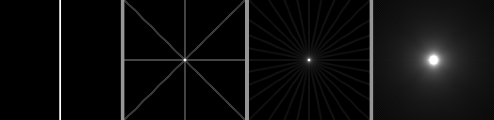
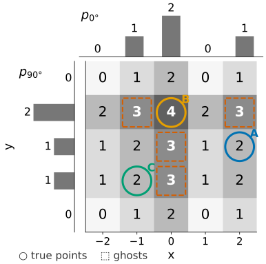
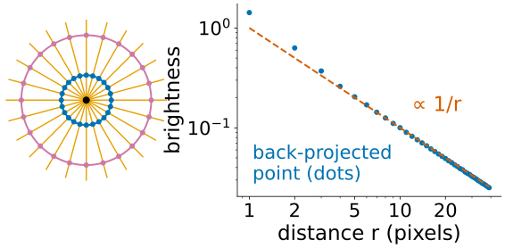
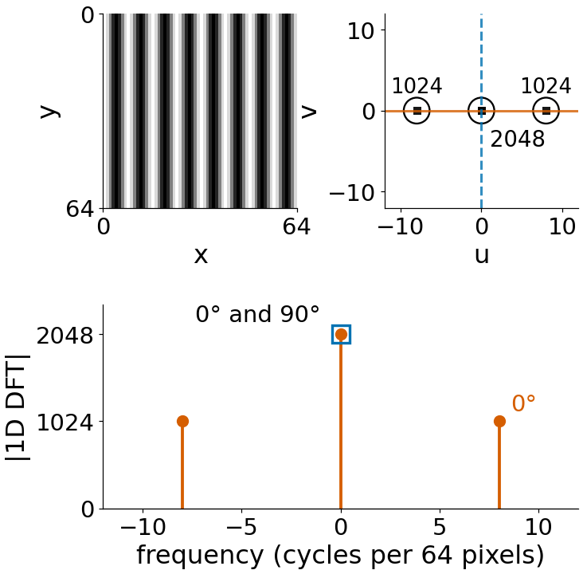
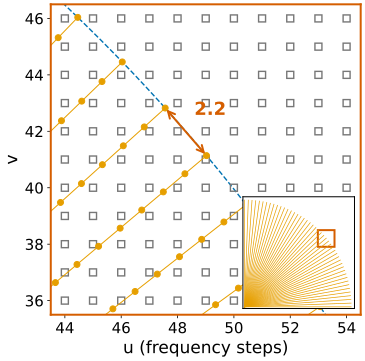

We do not know where along a ray the attenuation sat. So spread each measured value evenly along its ray, for every ray of every angle, and add everything up. That is back-projection.

Back-projection of a single point with 1, 4, 16 and 180 angles.
One angle: a stripe through the point.
Four angles: a star; the arms cross only at the point.
180 angles: a bright centre in a halo that fades with distance.
The point is in the right place, but it now glows.
By hand: three points, two angles
Back-project the projections of A = (2, 0), B = (0, 1) (mass 2) and C = (-1, -1) at 0° and 90° on a 5 \times 5 grid: each pixel gets its column’s value from p_0 plus its row’s value from p_{90°}.
B is the brightest (4), but four ghosts at value 3 outshine A and C (value 2). With two angles every crossing of a bright row and a bright column lights up.

Each pixel = its column’s value from p₀ (top) + its row’s value from p₉₀ (left). Circles: the true points; dashed squares: the four ghosts.
Why it blurs
With many angles, every line through a point passes through the point itself. Around it the lines spread out:
At distance r, the N lines through the point cross a circle of circumference 2\pi r in 2N places.
So the number of smears per unit length falls like N / (\pi r): with 180 angles about 11 at r = 5 pixels, but only 3 at r = 20.
Plain back-projection = the true image blurred with a 1/r kernel. Each point becomes a peak with a long halo.

Left: 12 lines through a point cross every circle around it 24 times, close together at small radius, spread out at large radius. Right: the brightness of a back-projected point (180 angles, the demos’ projector), averaged on rings, falls like 1/r.
The halo is not noise: it is a systematic overweighting of slow variations. Edges lose contrast and every object glows into its surroundings.
The math: back-projection
Back-projection of a sinogram g(\rho, \theta): for each pixel, add up the values of all rays through it,
A point at the origin has \mathcal R\delta(\rho, \theta) = \delta(\rho). With \mathbf x = r(\cos\varphi, \sin\varphi): \mathcal B\mathcal R\delta(\mathbf x) = \int_0^\pi \delta(r\cos(\theta - \varphi))\,d\theta = \dfrac{1}{r} (one zero in a half turn, slope r there).
By linearity and the shift rule, for any image: \mathcal B\mathcal R f = f * \dfrac{1}{|\mathbf x|}.
The 2D Fourier transform of 1/|\mathbf x| is 1/|\boldsymbol\omega|. So back-projection multiplies the spectrum by 1/|\boldsymbol\omega|: low frequencies are over-weighted. Undoing that is the next unit.
Try it: back-projection, angle by angle
Back-projection is the transpose
Projecting is linear: sinogram = A\,\mathbf x, for a (huge) matrix A with one row per ray and one column per pixel; row i holds the weights with which ray i sums the pixels.
Back-projection sends each measured number back to the pixels of its ray with the same weights: that is multiplication by A^\top.
A^\top is not A^{-1}. A^\top A is the blur we just saw, not the identity.
So “smear back” is the natural first guess, but not the answer. Two ways out: filter before smearing (next unit), or solve the linear system A\mathbf x = \mathbf b (the fourth unit).
The demos use a projector and back-projector built as an exact pair: \langle A\mathbf x, \mathbf y\rangle = \langle\mathbf x, A^\top\mathbf y\rangle to rounding.
An image is a sum of plane waves. The 2D spectrum gives the amount of each wave; the centre holds the slow waves, the edge the fine ones.
The direction from the centre to a spectrum point is the direction in which that wave varies.
Filtering = turning frequencies up or down = multiplying the spectrum.
What a projection does to waves: summing along y averages away every wave that varies in y. Only waves that vary along x alone survive in the projection at 0°.
The Fourier slice theorem
The 1D spectrum of the projection at angle \theta equals the 2D spectrum of the image along the line through the centre at the same angle \theta.
By hand: vertical stripes with period 8 in a 64 \times 64 image (I = \tfrac12 + \tfrac12\cos(2\pi x/8)).
Projection at 0° (onto x): a cosine with 8 cycles over 64 pixels. Its DFT: DC = 2048 and peaks of 1024 at \pm 8.
Projection at 90° (onto y): constant 32. Its DFT: only DC = 2048.
The 2D DFT: 2048 at the centre and 1024 at (\pm 8, 0). The horizontal line through the centre holds the two peaks; the vertical line holds only DC. ✔
Each angle gives one spoke of the spectrum; all angles together fill it.

The stripes; their 2D spectrum with the 0° line (solid) and the 90° line (dashed); below, the 1D spectra of the projections at 0° (dots) and 90° (square): exactly the values on those lines.
The math: the Fourier slice theorem
Continuous Fourier transform (the limit of the DFT for fine sampling; Fourier unit): F(\boldsymbol\omega) = \iint f(\mathbf x)\,e^{-2\pi i\,\boldsymbol\omega\cdot\mathbf x}\,d\mathbf x, and P_\theta(\omega) = \int p_\theta(\rho)\,e^{-2\pi i\omega\rho}\,d\rho.
For \theta = 0: \int p_0(x)e^{-2\pi i u x}dx = \iint f(x, y)e^{-2\pi i(ux + 0\cdot y)}dx\,dy = F(u, 0).
Discrete: the DFT of the column sums equals the v = 0 row of the 2D DFT exactly. At other angles the line falls between grid points, and the two agree only up to interpolation.
Try it: projection spectrum = slice
Direct Fourier reconstruction
The theorem suggests an algorithm: FFT every projection, put it on its spoke, inverse 2D FFT. The problem is the grid:
The spokes are dense near the centre and sparse at the edge: for a 128 \times 128 image with 90 spokes, neighbouring spokes at the outer ring (64 frequency steps from the centre) are 2.2 steps apart, near the centre far less than one.
The inverse FFT needs values on a Cartesian grid: we must interpolate (“grid”) from the spokes to the grid points.
An error at one frequency is a wave over the whole image: interpolation errors in the spectrum spread everywhere, they do not stay local.

Inset: one quadrant of 90 spokes. Main: the zoomed box near the outer ring. Spoke samples (dots) fall between the grid points (squares); neighbouring spokes are 2.2 steps apart there.
In the demo (Shepp–Logan, 90 spokes): nearest-cell gridding gives RMSE 0.079, bilinear 0.051; filtered back-projection (next unit) 0.041. Most scanners therefore use back-projection-based methods. The same polar ↔︎ Cartesian resampling appears in FFT registration, in the other direction (log-polar spectra for rotation and scale, stitching).
Try it: direct reconstruction
Summary
Back-projection smears every projection back along its rays and adds over all angles.
It is the transpose of projection, not its inverse: a point comes back with a 1/rhalo; slow variations are over-weighted.
Fourier slice theorem: the 1D spectrum of a projection is the central line of the 2D spectrum at the same angle. All angles fill the spectrum spoke by spoke.
Direct Fourier reconstruction must interpolate from sparse outer spokes to a grid, and spectral errors spread over the whole image.
The spokes also explain the halo: they crowd at the centre. The next unit weights them to fix it.